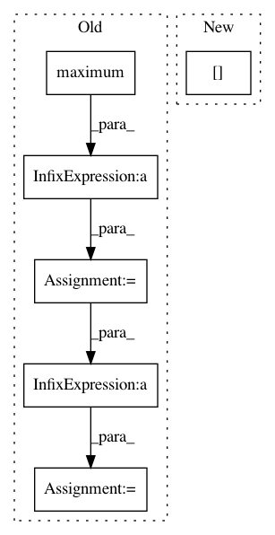

649325ff53812350688e3beea2979b0c7e62940a,keras_frcnn/roi_helpers.py,,non_max_suppression_fast,#,152
Before Change
xx1_un = np.minimum(x1[i], x1[idxs[:last]])
yy1_un = np.minimum(y1[i], y1[idxs[:last]])
xx2_un = np.maximum(x2[i], x2[idxs[:last]])
yy2_un = np.maximum(y2[i], y2[idxs[:last]])
// compute the width and height of the bounding box
ww_int = np.maximum(0, xx2_int - xx1_int)
hh_int = np.maximum(0, yy2_int - yy1_int)
ww_un = np.maximum(0, xx2_un - xx1_un)
hh_un = np.maximum(0, yy2_un - yy1_un)
// compute the ratio of overlap
overlap = (ww_int*hh_int)/(ww_un*hh_un + 1e-9)
// delete all indexes from the index list that have
idxs = np.delete(idxs, np.concatenate(([last],
np.where(overlap > overlap_thresh)[0])))
After Change
area_int = ww_int * hh_int
// find the union
area_union = area[i] + area[idxs[:last]] - area_int
// compute the ratio of overlap
overlap = area_int/(area_union + 1e-6)
In pattern: SUPERPATTERN
Frequency: 3
Non-data size: 6
Instances
Project Name: kbardool/keras-frcnn
Commit Name: 649325ff53812350688e3beea2979b0c7e62940a
Time: 2017-06-15
Author: yannhenon@gmail.com
File Name: keras_frcnn/roi_helpers.py
Class Name:
Method Name: non_max_suppression_fast
Project Name: tiberiu44/TTS-Cube
Commit Name: 9cf2bcdb24f23a17ec11e69b8885851771dfd3d8
Time: 2018-10-25
Author: boros@adobe.com
File Name: cube/models/vocoder.py
Class Name: BeeCoder
Method Name: learn
Project Name: broadinstitute/keras-rcnn
Commit Name: 637ecf5877bbd6647caef2bd64925e66a586fb29
Time: 2018-01-30
Author: allen.goodman@icloud.com
File Name: keras_rcnn/layers/losses/__init__.py
Class Name: RCNN
Method Name: regression_loss